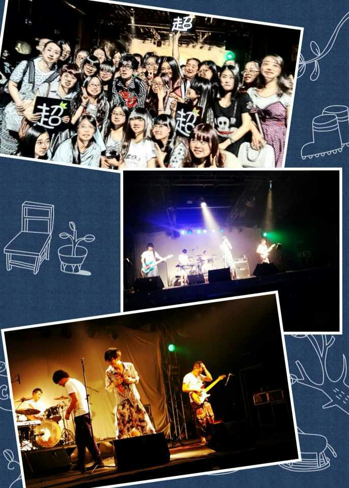

相随
干妈是个很温柔的人，偶尔也会煽煽情，但是总在不经意间毒舌，给大家一发暴击，第一次考核别人的时候居然紧张到忘记看考核群，线下live唱孤途的时候插了好几次口袋都没插进去。就是这样真实的一个他，真真切切对我产生了一些影响，生活太匆忙，最不缺的就是相遇和分离，谁都希望遇到什么深刻的人或事，好让以后的自己有值得怀念的东西，不管这些记忆如何，也一点一滴凝聚成最真实的自己，暗暗庆幸在偶然的时间必然地路过你的世界，没有轰轰烈烈，只有默默相随
